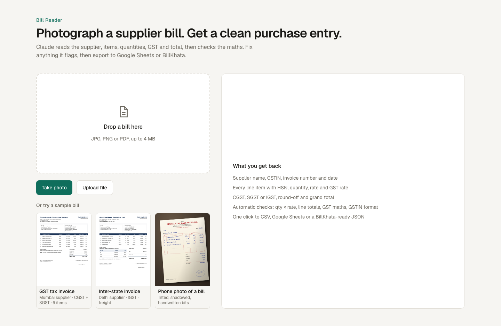

Case study · AI product
Bill Reader: from a photo of a supplier bill to a checked purchase entry
In my import business, every supplier invoice had to be typed into the books by hand: supplier, GSTIN, each item, quantity, rate and GST. I built a tool where you photograph the bill and AI does the reading. Then the app checks the maths before anything is saved.

The problem
Purchase bills come in every shape: printed GST invoices, inter-state bills with IGST, and handwritten cash memos photographed at the counter. Typing them in is slow, and the mistakes are easy to miss: a wrong quantity, a 12% item entered at 18%, or a total that doesn't match.
What it does
- PhotographPhone camera, image or PDF
- ReadClaude extracts every field into a fixed schema
- CheckQty × rate, totals, GST rates, GSTIN
- FixEdit any flagged cell; checks update live
- ExportGoogle Sheets, CSV or BillKhata
How it works
- AI reads, code verifies. Claude (vision) returns the supplier, invoice details, every line item and the tax totals as structured JSON that must match a schema, so there's no fragile text parsing. Six automatic checks (the arithmetic plus the GSTIN format) then catch misreads, and mistakes on the bill itself, before anything is exported.
- Built for Indian GST bills. It handles CGST + SGST on local bills and IGST on inter-state bills, mixed rates on one invoice, Indian digit grouping (1,23,456.00), and DD/MM/YY dates.
- Honest about uncertainty. Anything smudged, handwritten or assumed comes back as a reader note instead of a confident guess.
- Fast on a phone. Photos are compressed in the browser before upload, and the model runs at low reasoning effort because reading a bill is mostly perception.
- Lands where the work happens. One click adds rows to Google Sheets through a small Apps Script (no Google Cloud setup), or downloads a CSV, or a JSON file for BillKhata.
- Safe to put online. The public demo runs the sample bills for free (their results are cached), while uploading your own bill needs a passcode, so strangers can't run up the API bill.
Results
[One or two sentences on what changed in practice, for example how many bills you process a month now, or an error the checks caught that would have gone into the books.]
Built with
- Claude API (vision + structured outputs)
- Next.js
- TypeScript
- Zod
- Tailwind CSS
- Google Apps Script
- Vercel
What's next
- Post bills straight into BillKhata instead of downloading a JSON file.
- Batch mode: drop a month of bills and review them as one list.
- Flag duplicate invoices and price changes against a supplier's past bills.